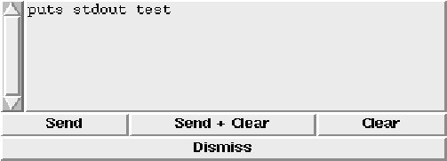

This template defines a new procedure named YesNoBox. Calling this procedure pops up a dialog box with a question to be answered with yes or no. The procedure gets the following parameters:

To configure the different aspects of the yes/no box, there exists a global array named yesNoBox. A default value of ``-'' means that the Tk default value is used. This array contains elements that control the yes/no box (color, font etc.):

A small example of an invocation may look like this:
set yesNoBox(font) *times*24*
if {[YesNoBox ''Yes/no message''] == 0} {
puts stdout ''yes''
}
global yesNoBox
This would create the following dialog box: